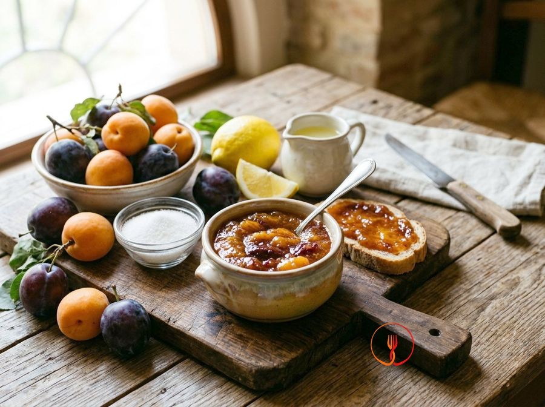

Marmellata (confettura frutta)
Ingredienti
- Frutta fresca pulita (prugne, albicocche, ecc)1 kg
- Zucchero500 gr
- Succo di limone30 ml
Allergeni
Nessuno dei 14 allergeni principali tra gli ingredienti.
Procedimento
- Lava accuratamente la frutta, elimina noccioli, piccioli e parti danneggiate. Tagliala a pezzetti regolari per favorire una cottura uniforme.
- Trasferisci la frutta in una pentola capiente dal fondo spesso, aggiungi lo zucchero e il succo di limone. Mescola bene per distribuire gli ingredienti.
- Porta sul fuoco medio e mescola fino al completo scioglimento dello zucchero. Quando il composto inizia a bollire, abbassa leggermente la fiamma.
- Cuoci per 40–60 minuti, mescolando frequentemente e schiumando se necessario. La frutta dovrà ammorbidirsi e il liquido concentrarsi.
- Se desideri una consistenza liscia, frulla parzialmente o completamente il composto con un mixer a immersione.
- Verifica la consistenza con la prova del piattino freddo: una piccola quantità deve scendere lentamente e non risultare troppo liquida.
- Versa la confettura ancora calda in vasetti idonei, precedentemente lavati e sterilizzati, seguendo una procedura di conservazione verificata per garantire il trattamento termico e il sottovuoto. Non affidarti al semplice riempimento a caldo per la conservazione in dispensa.
Consigli dello chef
Consigli, errori e alternative:
- Non utilizzare fiamme troppo alte: lo zucchero potrebbe caramellare prima che la frutta sia cotta.
- Per una consistenza più densa puoi utilizzare frutta naturalmente ricca di pectina o pectina alimentare seguendo le indicazioni del produttore.
- Puoi sostituire una parte dello zucchero con miele, considerando che cambieranno consistenza e conservabilità.
- Per una variante aromatica aggiungi cannella, vaniglia o scorza di limone.
Valori nutrizionali (stima)
| Per porzione (250 g) | Per 100 g | |
|---|---|---|
| Energia | 2556 kJ / 611 kcal | 1021 kJ / 244 kcal |
| Proteine | 1.5 g | 0.6 g |
| Carboidrati | 156 g | 62 g |
| di cui zuccheri | 148 g | 59 g |
| Grassi | 0.8 g | 0.3 g |
| di cui saturi | 0.1 g | 0.0 g |
| Fibre | 5.0 g | 2.0 g |
| Sale | 0.0 g | 0.0 g |
Valori stimati con l'AI su dati medi CREA / USDA: sono indicativi e non sostituiscono il parere di un medico o di un nutrizionista.
Apri la ricetta nell'app per la lista della spesa, le schede ingredienti e i negozi vicini.